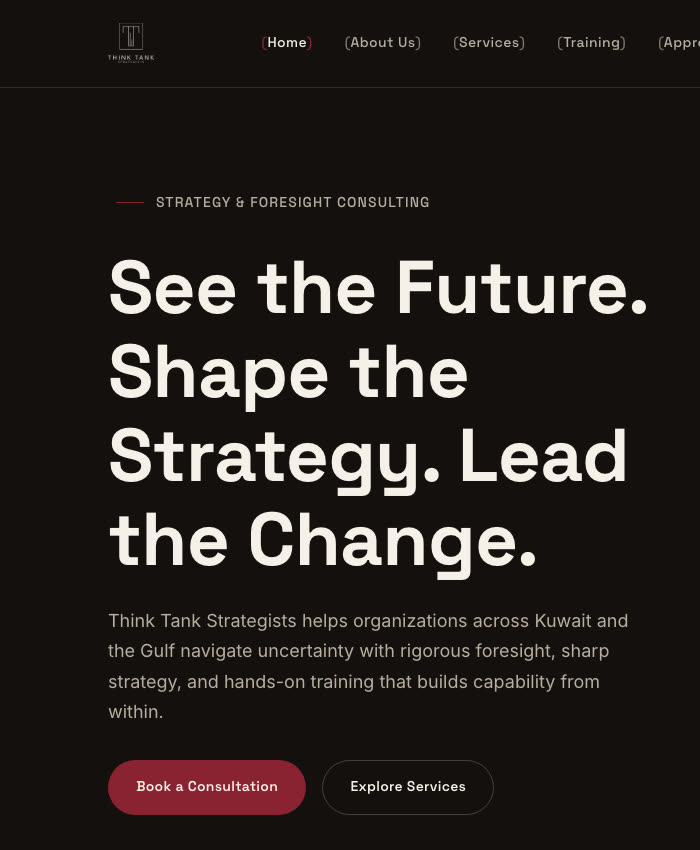

From a site that introduces the firm to a system that runs the training
A proposal for Think Tank Strategists: what the site does today, what the new system adds, and then the screens themselves.
For discussion · December 2026 · everything here can change
Today the site introduces the firm, and does it well
A clear identity, programs explained, an approach written down. That foundation stays.
- 6pages: Home, About Us, Services, Training, Approach, Contact
- 4training programs, public and in-house
- 1contact form, where every button ends
Source: thinktank.com.kw as read on 21 November 2026.


But an interested visitor stops at the contact form
Someone who wants to join a course passes four stations today, and the last one is outside the site.
- Reads about the programon the Training page
- Clicks "Request a Program"and lands on Contact
- Writes a messagename, email, interest
- Waits for a replytwo business days, then phone and email
Course registrationA student accountCourse content onlineExams and surveysA place for the trainer to manage courses
The proposal: one system in three parts
The site, a portal for students, and a portal for the trainer, all reading the same courses.
For visitors
The site
- Programs and their upcoming courses
- Registration for a course
- Sign in
For students
The student portal
- My courses
- Each course in chapters
- Video, information, materials, assignment, exam, survey
For Dr. Manal
The trainer portal
- Her programs and courses
- Publishing them on the site
Today and the new system, line by line
| The site today | The new system | |
|---|---|---|
| Courses | Program descriptions only | Each program shows its upcoming courses and sessions |
| Registration | A contact form and a two-day reply | The student registers for a course and gets an account |
| Student account | None | The student signs in and sees their courses |
| Course content | Not on the site | Each course in chapters: video, information and materials |
| Assignments and exams | Not on the site | An assignment and an exam per chapter, with the result shown |
| Surveys | Not on the site | A short survey per chapter |
| The trainer | No portal | A trainer portal for her programs and courses |
Part one
The site: the visitor's journey
- Sees the upcoming courseswith their dates and sessions
- Reads the programwho it is for, what they leave with, the session schedule
- Registers for a coursean account is created and confirmed with a code
- Enters the student portalwhere part two begins
Part two
The student portal: the student's journey
- Signs in and sees their courseswith the sessions of each
- Opens a courseits chapters and how far they have got
- Studies a chaptervideo, information and materials
- Submits the assignment and takes the examand sees the result
- Fills in the surveyonce per chapter
Part three
The trainer portal: where Dr. Manal defines her courses
- Sees all her programsand the courses under each
- Publishes a programso it appears on the site and students can register
Things to agree with Dr. Manal
The screens are built on written assumptions. Each changes with a word from her.
- YoursIs the course content recorded video, in-person sessions, or both?Assumed both: sessions in the room, and chapters online
- YoursHow is a chapter exam marked?Assumed 5 questions, a pass mark of 60% and two attempts
- YoursWhich language comes first?English in these screens; Arabic can follow
- YoursHow many courses and students a year?It sets the size of the system
And now the screens themselves
Nine linked screens in three parts. Names and dates are sample data.